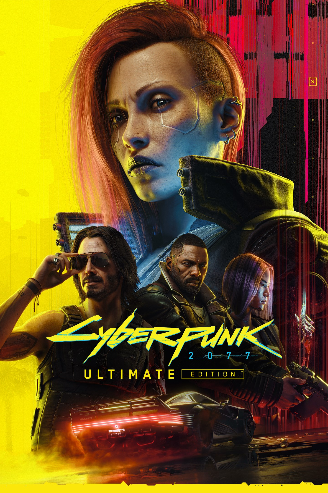
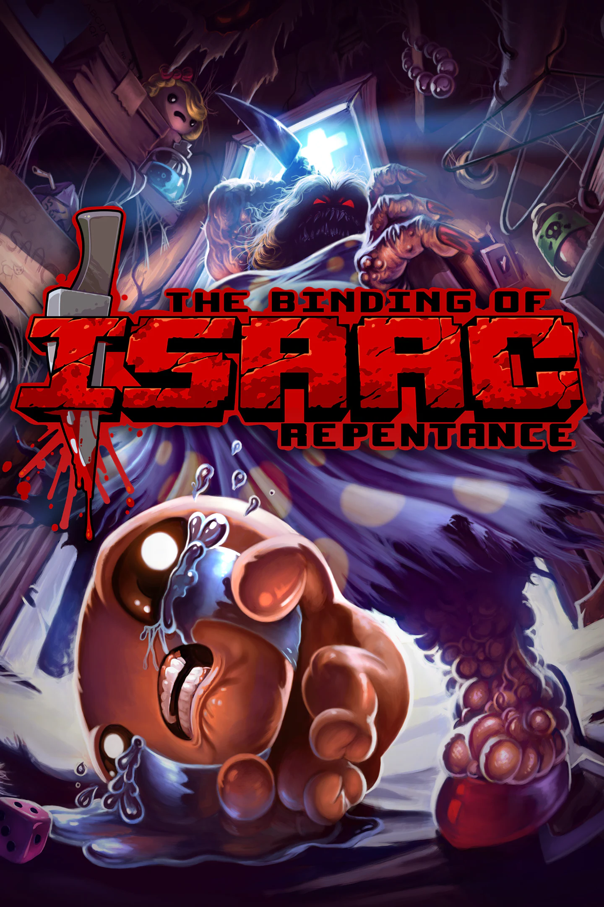

Imatges
Aquí tens les portades dels meus videojocs preferits:


Videos
Aquí tens trailers i gameplays dels meus videojocs preferits:
Aquí tens les portades dels meus videojocs preferits:


Aquí tens trailers i gameplays dels meus videojocs preferits: